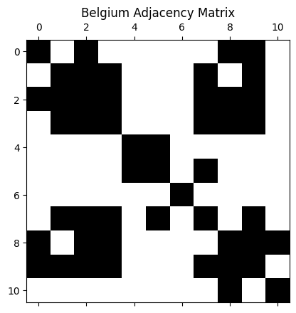
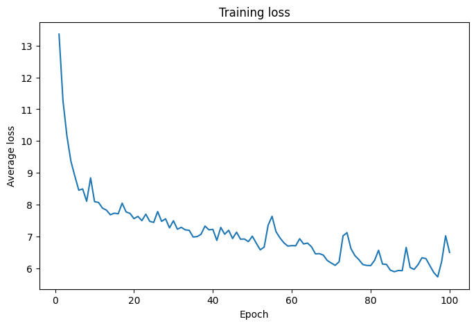
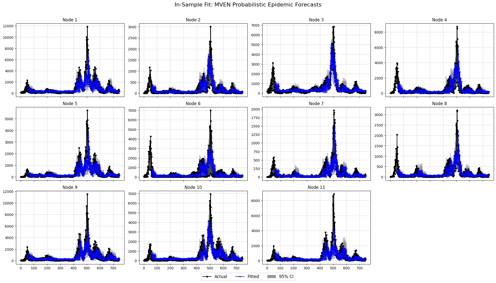
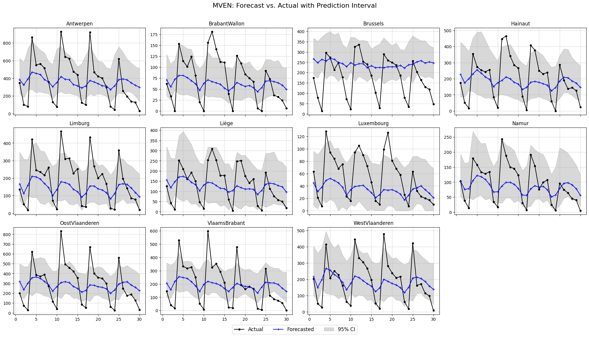
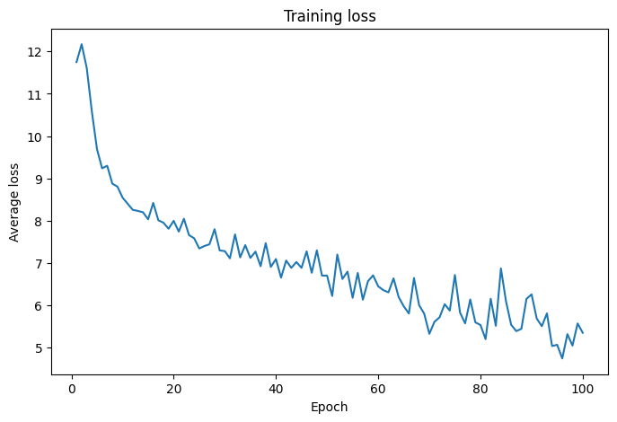
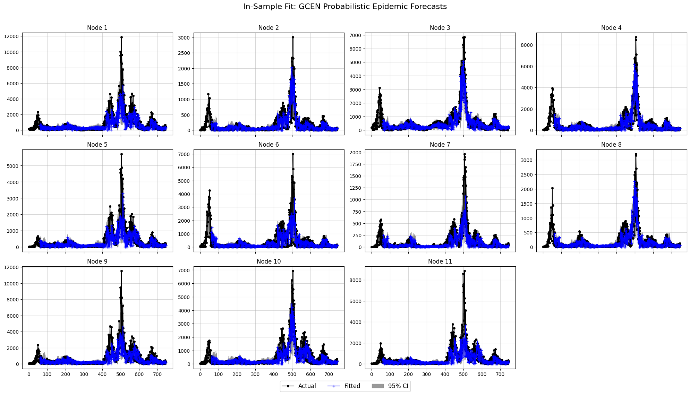
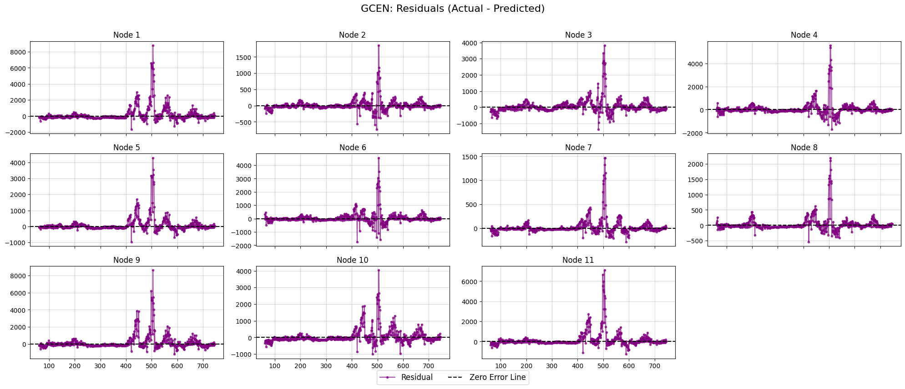
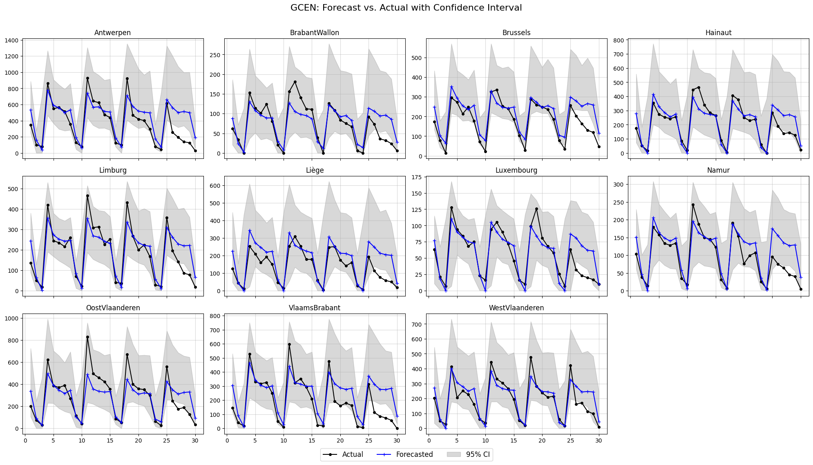
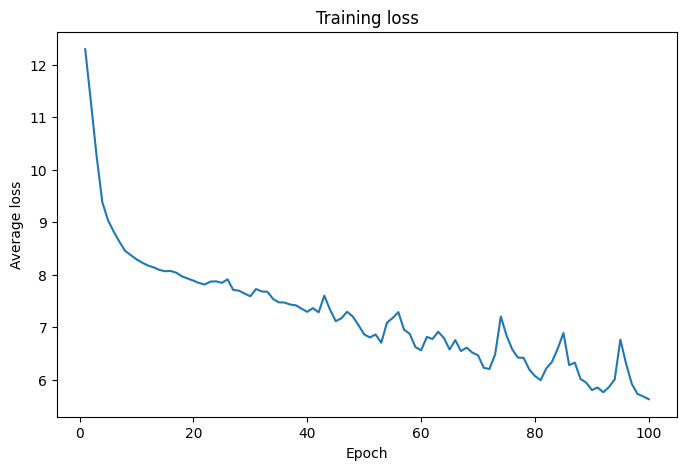
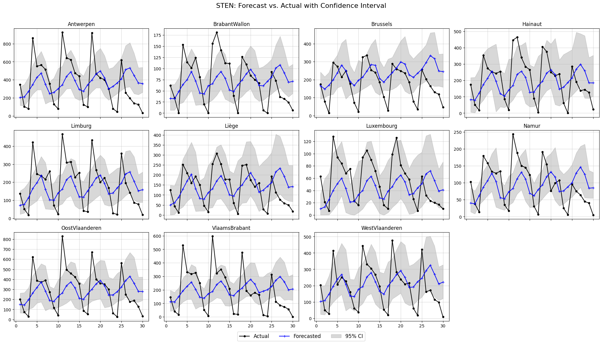

import numpy as np
import pandas as pd
import torch
import torch.optim as optim
from torch.utils.data import DataLoader
import matplotlib.pyplot as plt
import warnings
warnings.filterwarnings('ignore')
from stengression import GCEN, STEN, MVEN, GraphInfo, SpatioTemporalDataset
from stengression import compute_adjacency_matrix, prepare_spatial_weights, plot_forecasts, energy_score_loss
1. Prepare the distances and adjacency matrix#
# Load the matrix containing Haversine distances for each node and compute the adjacency matrix
distances = pd.read_csv("Belgium_Distance_Matrix.csv")
dist_array = distances.values
adjacency_matrix = compute_adjacency_matrix(distances.values, sigma2=0.9948808074595779, epsilon=0.07692416606625796, n=40)
np.fill_diagonal(adjacency_matrix, 1)
plt.spy(adjacency_matrix)
plt.title("Belgium Adjacency Matrix")
plt.show()
node_indices, neighbor_indices = np.where(adjacency_matrix == 1)
graph_info = GraphInfo(
edges=(node_indices.tolist(), neighbor_indices.tolist()),
num_nodes=adjacency_matrix.shape[0],
)
print(f"Number of nodes: {graph_info.num_nodes}, Number of edges: {len(graph_info.edges[0])}")

Number of nodes: 11, Number of edges: 49
device = torch.device("cuda" if torch.cuda.is_available() else "cpu")
graph_conv_params = {
"aggregation_type": "mean", # mean, sum, max
"combination_type": "concat",
"activation": None
}
gcn_seed = 21
temporal_seed = 9
print(f'Using device: {device}.')
Using device: cuda.
2. Prepare the training dataset#
# Forecast horizon: 30 days
NUM_NODES = 11
IN_FEAT_DIM = 1 # D
P_LAG = 60 # Lag window, input_seq_len
T_PRED = 30 # Prediction horizon, output_seq_len
BATCH_SIZE = 64
alpha, max_spatial_lag = 1,2
W = 1/(dist_array**alpha)
np.fill_diagonal(W, 0)
row_sums = W.sum(axis=1, keepdims=True)
W = W / row_sums
W = torch.tensor(W)
# W is the initial spatial weights matrix
W_list = prepare_spatial_weights(W, max_lag=max_spatial_lag)
df = pd.read_csv("Belgium_Covid_Nodates.csv", encoding='latin-1')
sts_data = torch.tensor(df.values, dtype=torch.float32)
sts_data=sts_data.view(sts_data.shape[0], sts_data.shape[1], 1) # Converts into T x N x 1
sts_data.to(device)
node_names = df.columns.tolist()
train_tensor = sts_data[:-T_PRED, :, :]
test_ground_truth = sts_data[-T_PRED:, :, :] # The ground truth for the first forecast window is the first T_PRED steps of the test set
test_history = train_tensor[-P_LAG:, :, :] # The history required to make this forecast is the last P_LAG steps of the training set
# Standardize train data
y_train = train_tensor.clone()
mean, std = train_tensor.mean(axis=0), train_tensor.std(axis=0)
train_tensor = ((train_tensor - mean) / std)
test_history = ((test_history - mean) / std)
# Caution: Do not standardize test_ground_truth, as we want to compare the real forecast values.
train_dataset = SpatioTemporalDataset(train_tensor, input_seq_len=P_LAG, output_seq_len=T_PRED, multi_horizon=True)
trainloader = DataLoader(train_dataset, batch_size=BATCH_SIZE, shuffle=False)
3. MVEN#
3.1 Training the MVEN model#
mven = MVEN(in_feat_dim=IN_FEAT_DIM,
lstm_hidden_dim=72, lstm_num_layers=3,
lstm_dropout=0.09462213176635498, noise_dist="uniform",
p_lag=P_LAG, t_pred=T_PRED,
num_nodes=NUM_NODES, temporal_seed=9).to(device)
optimizer = optim.Adam(mven.parameters(), lr=0.00440078425059993)
# Run Training
mven.fit(data_loader=trainloader, optimizer=optimizer, loss_fn=energy_score_loss, num_epochs=100, m_samples=2,
device=device, monitor=True, visualize=True, verbose=False)
Training: 100%|██████████| 100/100 [00:30<00:00, 3.32epoch/s]

3.2 In-sample Diagnostics#
# Getting the un-standardized in-sample predictions
in_sample_preds = mven.predict_in_sample(train_tensor, m_samples = 100, method = "q_step", batch_size = 64,
device=device, unstandardize=[mean, std])
in_sample_preds.shape
torch.Size([100, 746, 11, 1])
# Evaluation of in-sample predictions
mven.evaluate_in_sample_fit(train_tensor, m_samples = 100, n_repeats = 10,
method = "q_step", batch_size = 64, point_method="median",
unstandardize = [mean,std], device = device)
| SMAPE | MAE | RMSE | MASE | RMSSE | Pinball_80 | Pinball_95 | Rho-0.5 | Rho-0.9 | CRPS | EC | Winkler | |
|---|---|---|---|---|---|---|---|---|---|---|---|---|
| mean | 67.11 | 224.55 | 565.75 | 1.15 | 1.15 | 111.72 | 85.06 | 0.46 | 0.4 | 185.68 | 0.54 | 4278.32 |
| std | 0.11 | 0.61 | 2.43 | 0.00 | 0.00 | 0.45 | 0.60 | 0.00 | 0.0 | 0.29 | 0.00 | 32.22 |
# Getting the residuals
residuals = mven.get_residuals(in_sample_preds, y_train, point_method="median")
residuals.shape
torch.Size([746, 11, 1])
# Plotting the in-sample predictions vs training data and residuals
mven.plot_in_sample_fit(
in_sample_preds=in_sample_preds,
original_data=y_train, # Ensure ground truth is also in original scale
plots_per_row=4,
confidence_level=0.95,
title="In-Sample Fit: MVEN Probabilistic Epidemic Forecasts"
)
mven.plot_residuals(
residuals=residuals,
plots_per_row=4,
title="MVEN: Residuals (Actual - Predicted)"
)

3.3 Out-of-sample Forecasts and Evaluation#
forecast_ensemble = mven.predict(m_samples=100, history=test_history, unstandardize=[mean, std], device=device)
forecast_ensemble.shape
torch.Size([100, 30, 11, 1])
metrics = mven.evaluate_forecasts(m_samples=100, n_repeats=50,
history=test_history, y_true=test_ground_truth, y_train=y_train,
unstandardize=[mean, std])
metrics
| SMAPE | MAE | RMSE | MASE | RMSSE | Pinball_80 | Pinball_95 | Rho-0.5 | Rho-0.9 | CRPS | EC | Winkler | |
|---|---|---|---|---|---|---|---|---|---|---|---|---|
| mean | 66.41 | 95.81 | 127.96 | 0.49 | 0.26 | 35.56 | 15.81 | 0.54 | 0.27 | 72.87 | 0.62 | 1140.36 |
| std | 0.43 | 0.85 | 1.21 | 0.00 | 0.00 | 0.69 | 0.83 | 0.00 | 0.01 | 0.67 | 0.01 | 32.17 |
forecast_ensemble = mven.predict(test_history, m_samples = 100, unstandardize=[mean, std], device=device)
plot_forecasts(NUM_NODES, plots_per_row=4, t_pred=30, forecast_ensemble=forecast_ensemble,
ground_truth=test_ground_truth, confidence_level=0.95, node_names=node_names,
title='MVEN: Forecast vs. Actual with Prediction Interval')

4. GCEN#
4.1 Training the GCEN Model#
gcen = GCEN(in_feat_dim=IN_FEAT_DIM,
gcn_out_feat=6,
lstm_hidden_dim=91,
lstm_num_layers=5,
lstm_dropout=0.30479293048737066,
p_lag=P_LAG,
t_pred=T_PRED,
graph_info=graph_info,
graph_conv_params=graph_conv_params,
noise_encode="add",
noise_dist="uniform",
gcn_seed=21,
temporal_seed=9
).to(device)
optimizer = optim.Adam(gcen.parameters(), lr=0.00426979947571805)
# Run Training
gcen.fit(data_loader=trainloader, optimizer=optimizer, loss_fn=energy_score_loss, num_epochs=100, m_samples=2,
device=device, monitor=True, visualize=True, verbose=False)
Training: 100%|██████████| 100/100 [01:03<00:00, 1.56epoch/s]

4.2 In-sample Diagnostics#
# Getting the un-standardized in-sample predictions
in_sample_preds = gcen.predict_in_sample(train_tensor, m_samples = 100, method = "q_step", batch_size = 64,
device=device, unstandardize=[mean, std])
in_sample_preds.shape
torch.Size([100, 746, 11, 1])
# Evaluation of in-sample predictions
gcen.evaluate_in_sample_fit(train_tensor, m_samples = 100, n_repeats = 10,
method = "q_step", batch_size = 64, point_method="median",
unstandardize = [mean,std], device = device)
| SMAPE | MAE | RMSE | MASE | RMSSE | Pinball_80 | Pinball_95 | Rho-0.5 | Rho-0.9 | CRPS | EC | Winkler | |
|---|---|---|---|---|---|---|---|---|---|---|---|---|
| mean | 63.87 | 202.47 | 517.36 | 1.03 | 1.05 | 110.0 | 88.85 | 0.42 | 0.41 | 169.35 | 0.55 | 4072.27 |
| std | 0.12 | 0.68 | 3.54 | 0.00 | 0.01 | 0.5 | 0.74 | 0.00 | 0.00 | 0.50 | 0.00 | 46.93 |
# Plotting the in-sample predictions vs training data and residuals
gcen.plot_in_sample_fit(
in_sample_preds=in_sample_preds,
original_data=y_train, # Ensure ground truth is also in original scale
plots_per_row=4,
confidence_level=0.95,
title="In-Sample Fit: GCEN Probabilistic Epidemic Forecasts"
)
gcen.plot_residuals(
residuals=residuals,
plots_per_row=4,
title="GCEN: Residuals (Actual - Predicted)"
)


4.2 Out-of-sample Forecasts and Evaluation#
metrics = gcen.evaluate_forecasts(m_samples=100, n_repeats=50,
history=test_history, y_true=test_ground_truth, y_train=y_train,
unstandardize=[mean, std])
display(metrics)
| SMAPE | MAE | RMSE | MASE | RMSSE | Pinball_80 | Pinball_95 | Rho-0.5 | Rho-0.9 | CRPS | EC | Winkler | |
|---|---|---|---|---|---|---|---|---|---|---|---|---|
| mean | 46.99 | 55.13 | 82.02 | 0.28 | 0.17 | 22.2 | 10.17 | 0.31 | 0.18 | 42.38 | 0.86 | 561.29 |
| std | 1.08 | 0.86 | 1.44 | 0.00 | 0.00 | 0.6 | 0.32 | 0.00 | 0.00 | 0.59 | 0.01 | 14.58 |
forecast_ensemble = gcen.predict(test_history, m_samples = 100, unstandardize=[mean, std], device=device)
plot_forecasts(NUM_NODES, plots_per_row=4, t_pred=30, forecast_ensemble=forecast_ensemble,
ground_truth=test_ground_truth, confidence_level=0.95, node_names=node_names,
title='GCEN: Forecast vs. Actual with Confidence Interval')

5. STEN#
sten = STEN(in_feat_dim=IN_FEAT_DIM, embedding_dim=10, max_spatial_lag=max_spatial_lag, num_nodes=NUM_NODES, noise_dist="uniform",
lstm_hidden_dim=39, lstm_num_layers=1, lstm_dropout=0.2433492165113465,
p_lag=P_LAG, t_pred=T_PRED, temporal_seed=9).to(device)
optimizer = optim.Adam(sten.parameters(), lr=0.0016437668357369587)
# Run Training
sten.fit(data_loader=trainloader, optimizer=optimizer, loss_fn=energy_score_loss, num_epochs=100, m_samples=2,
device=device, monitor=True, visualize=True, verbose=False, W_list=W_list)
metrics = sten.evaluate(m_samples=100, n_repeats=50,
history=test_history, y_true=test_ground_truth, y_train=y_train,
unstandardize=[mean, std], W_list=W_list)
display(metrics)
Training: 100%|██████████| 100/100 [00:08<00:00, 11.42epoch/s]

| SMAPE | MAE | RMSE | MASE | RMSSE | Pinball_80 | Pinball_95 | Rho-0.5 | Rho-0.9 | CRPS | EC | Winkler | |
|---|---|---|---|---|---|---|---|---|---|---|---|---|
| mean | 68.29 | 100.76 | 136.04 | 0.51 | 0.28 | 38.57 | 21.37 | 0.57 | 0.33 | 79.06 | 0.53 | 1422.45 |
| std | 0.20 | 0.42 | 0.49 | 0.00 | 0.00 | 0.33 | 0.51 | 0.00 | 0.00 | 0.34 | 0.01 | 33.87 |
forecast_ensemble = sten.predict(test_history, m_samples = 100, unstandardize=[mean, std], device=device, W_list=W_list)
plot_forecasts(NUM_NODES, plots_per_row=4, t_pred=30, forecast_ensemble=forecast_ensemble,
ground_truth=test_ground_truth, confidence_level=0.95, node_names=node_names,
title='STEN: Forecast vs. Actual with Confidence Interval')
